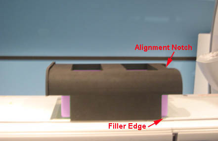
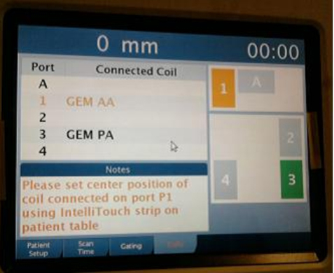
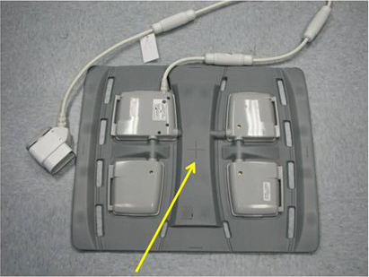
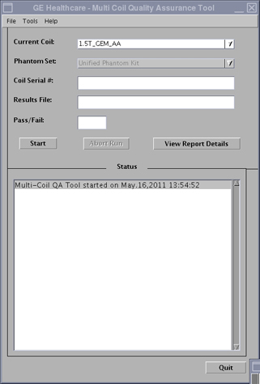

Operating Documentation
Direction 5670006, Rev# 1
Discovery MR750w GEM Service Methods
Module Version 4.0, Version Date 9/27/11
Operating Documentation |
| Required Persons | Preliminary Reqs | Procedure | Finalization |
|---|---|---|---|
| 1 | Not Applicable | 30 mins | Not Applicable |
The 1.5T GEM Coil MCQA will utilize the 1.5T phantoms, which are green in color. The 3.0T GEM Coil MCQA will utilize the 3.0T phantoms, which are pink in color.
| NOTE: | Coils do not ship with phantoms. Phantoms come in a unified phantom set with the MR System. |
| Item | Qty | Effectivity | Part# | Manufacturer | |
|---|---|---|---|---|---|
| TL Unified Phantom (For 1.5T) | 2 | - | 5343347 | - | |
| TL Unified Phantom (For 3.0T) | 2 | - | 5343347-2 | - | |
| PA Phantom Positioner (For both 1.5T and 3.0T) | 1 | - | 5405748 | - | |
Place the Flat Filler Panel (shown below) on the GEM table.
Illustration 1: Flat Filler Panel

Place two TL Unified Phantoms with the PA Phantom Positioner on the GEM table.
Ensure the Alignment notch on the PA Phantom Positioner faces toward the bore, and the side opposite the alignment notch on the PA Phantom Positioner embraces the TL Unified Phantom.
Ensure the edge of the lower part of PA Phantom Positioner aligns with the edge of the flat filler panel as shown.
Illustration 2: Positioning of PA Phantom Positioner

Place the AA Coil on top of the PA Phantom Positioner, and secure to each other with Velcro® straps as shown. Connect the coil to the P1 port.
Illustration 3: Securing Coil to Positioner with Straps

Set center position of the AA Coil connected on Port 1 using the Touch and Go strips on the side of the table.
Illustration 4: Setting Center Position of AA coil Using Touch and Go

Landmark on the AA Coil crosshairs as shown, and press [Advance to Scan]
Illustration 5: Landmarking on AA Coil

Run the Multi-Coil Quality Assurance Tool. Ensure that the correct coil is selected in the Current Coil field: 1.5T_GEM_AA (shown below) or 3.0T_GEM_AA for a 3.0T system.
Illustration 6: MCQA Tool Menu

No finalization steps.